<section class="relative">
    <div class="w-[20.25rem] transition-all duration-75 mx-4 mb-4 {{focused? 'bg-neutral-800' : 'bg-neutral-600'}} h-36 flex rounded-md flex-col justify-start items-start gap-1">
            <div class="flex relative flex-row items-center h-14 text-sm mt-1">
                
                <span [class]="'text-[#fafafa] truncate block'">Ruperto Perez</span>
            </div>
            <div class="h-16 rounded-lg w-[18.25rem] mx-4 px-3 bg-neutral-700 flex flex-row items-center gap-4">
                
                <span [class]="'text-[#fafafa] truncate block'">Playing a Game</span>
            </div>
            <div (mouseenter)="focused = true" (mouseleave)="focused = false" class="bg-transparent w-full h-full absolute">
    </div>
    </div>
</section>
